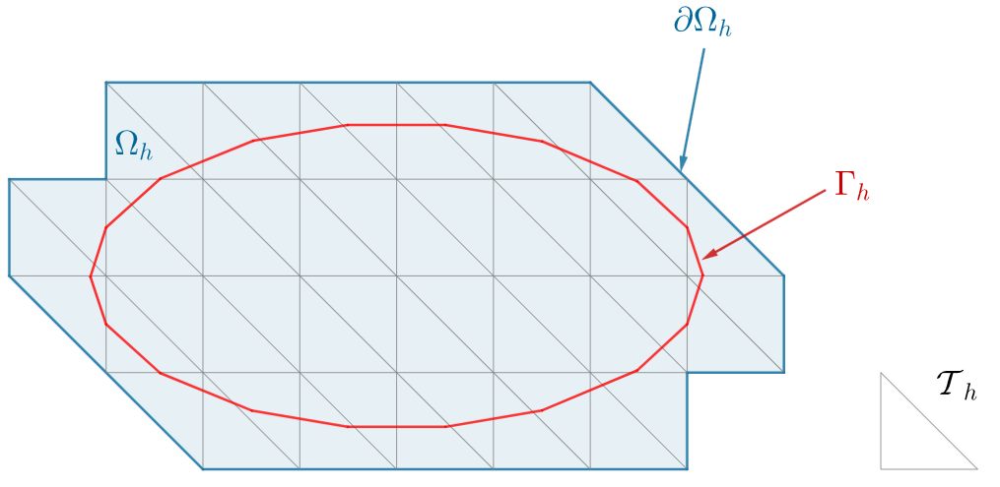

Presentation of the $\phi$-FEM method
We will only consider here the case of the Poisson problem with Dirichlet condition. For more details on mesh assumptions, convergence results and finite element matrix condition number, please refer to ref 12,8,10,19. Models \(\phi\)-FEM for the Poisson problem with Neumann or mixed conditions (Dirichlet and Neumann) are presented in \modif{ref …}. For consideration of the elasticity problem, please refer to \modif{ref …}.
1. Description of spaces
We will consider the Poisson-Dirichlet problem
where the domain \(\Omega\) and its boundary \(\Gamma\) are given by a level-set function \(\phi\) such that
The level-set function \(\phi\) is supposed to be known on \(\mathbb{R}^d\), smooth, and to behave near \(\Gamma\) as the signed distance to \(\Gamma\) (Figure 1).
Example. If \(\Omega\) is a circle of center \(A\) and radius \(r\), the level-set function can be defined by
If \(\Omega\) is an ellipse with center \(A\) and parameter \((a,b)\), the level-set function can be defined by
We assume that \(\Omega\) is inside a domain \(\mathcal{O}\) and we introduce a simple quasi-uniform mesh \(\mathcal{T}_h^\mathcal{O}\) on \(\mathcal{O}\) (Figure 2).
We will consider \(\mathcal{T}_h\) a sub-mesh of \(\mathcal{T}_h^\mathcal{O}\) obtained by removing the elements located entirely outside \(\Omega\) (Figure 3). To be more specific, \(\mathcal{T}_h\) is defines by
We note \(\Omega_h\) the domain covered by the \(\mathcal{T}_h\) mesh (\(\Omega_h\) will be slightly larger than \(\Omega\)) and \(\partial\Omega_h\) its boundary (Figure 3). The domain \(\Omega_h\) is defined by
Figure 2. Fictitious domain
|

Figure 3. Domain considered
|
Now, we can introduce an approximation \(\phi_h\in V_{h,\mathcal{O}}^{(l)}\) of \(\phi\) given by \(\phi_h=I_{h,\mathcal{O}}^{(l)}(\phi)\) where \(I_{h,\mathcal{O}}^{(l)}\) is the standard Lagrange interpolation operator on
By considering \(\Gamma_h=\{\phi_h=0\}\), the approximate boundary of \(\Gamma\), we can introduce \(\mathcal{T}_h^\Gamma\subset \mathcal{T}_h\) (Figure 4) which contains the mesh elements cut by the approximate boundary \(\Gamma_h = \{\phi_h=0\}\), i.e.
and \(\mathcal{F}_h^\Gamma\) (Figure 5) collects the interior facets of the mesh \(\mathcal{T}_h\) either cut by \(\Gamma_h\) or belonging to a cut mesh element
Figure 4. Boundary cells
|
Figure 5. Boundary edges
|
2. Description of the \(\phi\)-FEM method
Attention là cas homogène !
As with standard FEM, the general idea behind \(\phi\)-FEM is to find a weak solution (i.e. a solution to the variational problem) to the Poisson problem in question. The main difference lies in the spaces considered. In fact, we’re no longer looking to solve the problem on \(\Omega\) (of boundary \(\Gamma\)) but on \(\Omega_h\) (of boundary \(\partial\Omega_h\)). Since our edge conditions are defined on \(\Gamma\), we don’t have a direct condition on the \(\partial\Omega_h\) boundary, so we’ll have to add terms to the variational formulation of the problem, called stabilization terms.
Assuming that the right-hand side \(f\) is currently well-defined on \(\Omega_h\) and that the solution \(u\) can be extended on \(\Omega_h\) such that \(-\Delta u=f\) on \(\Omega_h\), we can introduce a new unknown \(w\in H^1(\Omega_h)\) such that \(u=\phi w\) and the boundary condition on \(\Gamma\) is satisfied. After integration by parts, we have
Given an approximation \(\phi_h\) of \(\phi\) on the mesh \(\mathcal{T}_h\), as defined in Section ADD paragraph label antora, and a finite element space \(V_h\) on \(\mathcal{T}_h\), we can then search for \(w_h\in V_h\) such that
We can consider the finite element space \(V_h=V_h^{(k)}\) with
The bilinear form \(a_h\) and the linear form \(l_h\) are defined by
and
with
and
with \(\sigma\) an independent parameter of h, which we’ll call the stabilization parameter.
Ajouter remarque en disant que \(\Omega_h\) dépend implicitement de \(\phi\) ?
Ajouter remarque terme au bord ne s’annule pas sur \(\partial\Omega_h\) + expliquer ce que c’est crochets - termes de saut.
AJOUTER Explications termes de stabilisation !
Ajouter explication cas non homogène (dual et direct).